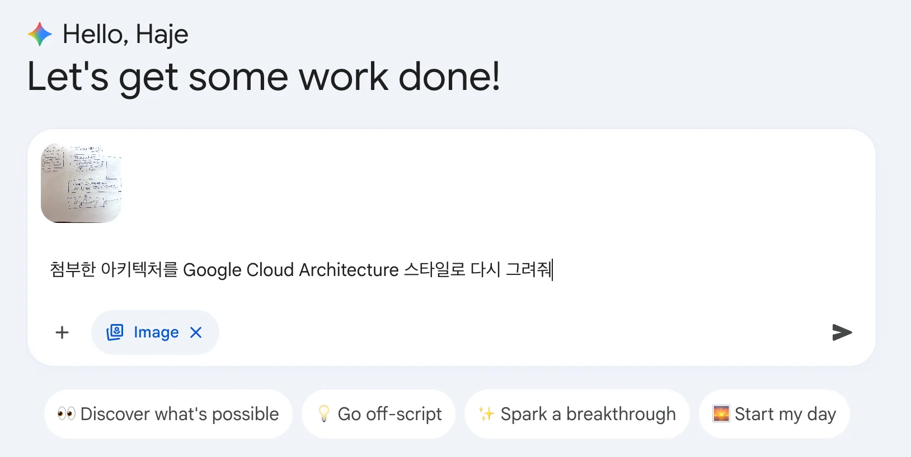
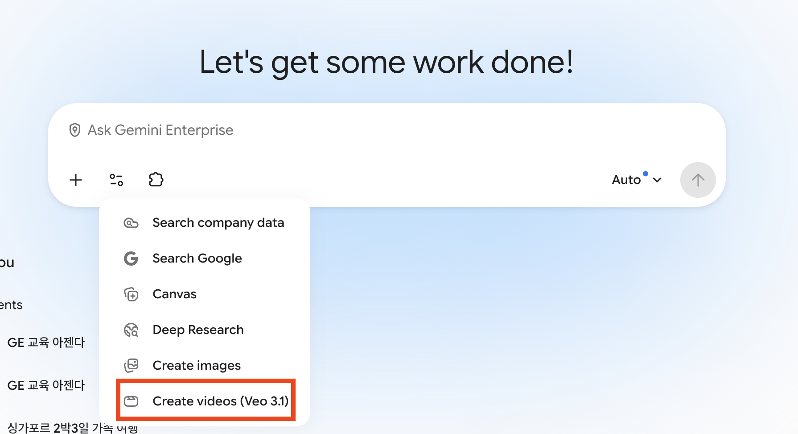

📱 9:16 세로형 모바일 포스터
9:16 Poster
Gemini Enterprise를 잘 쓰고 싶어하는 직장인을 위한 팁과 핵심 기능을 알려주는 포스터(비율 9:16)를 그려줘. 내용: AI Assistant, Deep Research, Gemini Notebook, Agent Designer, Connectors, Media Generation

✨ 모바일 최적화 9:16 비율 및 엔터프라이즈 인포그래픽 렌더링
🏗️ 스케치 다이어그램 변환 (Img2Img)
회의실 화이트보드 스케치를 업로드하고 전문 클라우드 스타일로 다시 그리도록 요청합니다.

✨ 손그림의 모호한 선과 기호를 엔터프라이즈 아키텍처 아이콘으로 정밀 변환
⚡ Veo 3.1 활성화 필수:
새 대화창(New chat) ➔ 입력창 하단 Tools 패널 ➔ Create videos (Veo 3.1) 도구 활성화 후 프롬프트 실행

🍾 제품 연출 돌리 샷

자연광 조명 클로즈업 무빙
🍔 식품 매크로 슬로우

치즈 멜팅 4K 디테일
🚁 드론 FPV 하강 샷

폭포 협곡 하강 역동 앵글
📼 90s VHS 캠코더

노이즈 색 번짐 아날로그 감성
📌 스프레드시트 분석 핵심 팁
- 1행 헤더 인식: 1행에 컬럼명이 명시되어 있어야 자동 매핑됩니다.
- 괄호 컬럼 지정:
(주문 완료일),(Orders Total Sales)처럼 괄호로 컬럼을 명시하면 정확도가 극대화됩니다.
💡 변환 파이프라인: 원본 데이터 테이블(1,000행) ➔ 월별 추이 선 차트 & 제품별 기여도 막대 차트 자동 렌더링
👉 실습 액션
coffee orders.xlsx첨부 후 "월별 매출 추이 선 차트를 그려줘" 실행
 엑셀 원본 데이터를 기반으로 도출된 매출 시각화 차트
엑셀 원본 데이터를 기반으로 도출된 매출 시각화 차트
📑 슬라이드 요약 질의
PPTX Parser
BigQuery New Feature 들에 대해서 각 기능별로 요약을 해주고, GA, Preview 여부를 표로 작성해서 보여줘
다면 장표 자동 인식
표/다이어그램 텍스트 추출
3열 비교표 렌더링
👉 실습 액션
BigQuery New Feature Update.pptx첨부 후 위 프롬프트 실행
 슬라이드 장표를 파싱하여 생성된 3열 요약 표
슬라이드 장표를 파싱하여 생성된 3열 요약 표
💬 강사 해설 가이드:
오프닝 브리핑: 복잡한 설정 없이 엔터프라이즈 환경에서 바로 체감하는 AI 파트너십의 8가지 실무 기능을 소개합니다.